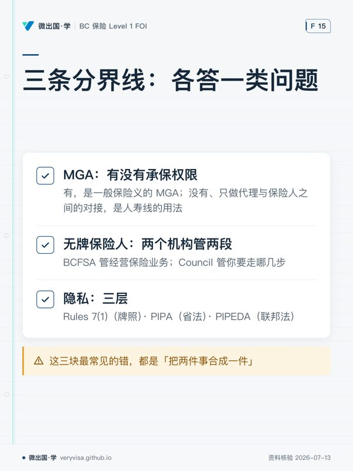

监管方的通用保险胜任力框架（GICF – Level 1）点名要求、而两套备考资料几乎都没讲的，有三块： MGA 与委托权限、无牌保险人、隐私法。
本页原先把其中两块合并成一篇简版讲。现在三块各有专页，本页只做入口—— 这样做的理由很实在：同一件事写在两个地方，早晚会有一处被改、另一处没改， 读者就会撞上两套说法而不知道该信哪个。一件事只留一个现行权威。
三块各去哪一页
| 缺口 | 现行权威页 | 一句话记住它 |
|---|---|---|
| MGA／委托权限 | MGA 与委托权限 | 同样三个字母，一般保险与人寿险指的是两种机构，而且在「能不能承保」上说法正好相反 |
| 无牌保险人 | 无牌保险人 | 不是「禁止碰」，是一条被开了口的禁令：禁令（FIA s.75）＋ 口子（s.76）＋ 程序（Council Rules 7(11.1)） |
| 隐私法 | 隐私法两部半 | 分界不是省份，是活动：省内看 PIPA，跨省跨境与联邦行业看 PIPEDA |
一张图先分清「谁在管你」
这三块看起来不相干，其实答的是同一类问题：在你和客户之间，还站着谁；他们各自受谁管。
BCFSA Insurance Council
（保险人能不能经营） （持牌人能不能这么做）
│ │
保险人 ──委托──▶ MGA ──▶ 零售经纪／销售员 ──▶ 客户
│ │
└── 无牌保险人：s.75 禁 / s.76 开口 └── 客户的个人信息：
RULE 7(1) 牌照层
PIPA / PIPEDA 法律层
三条分界线，各记一句：
- MGA 那条线分的是有没有承保权限。有，它是一般保险义的 MGA； 没有、只做代理与保险人之间的对接，那是人寿线的用法。
- 无牌保险人那条线分的是两个机构管两段： BCFSA 管「谁能在 BC 经营保险业务」，Council 管「你做这件事时要走哪几步」。 违反的后果不一样：前者是违法经营，后者是你的牌照。
- 隐私那条线分的是三层：Council Rules 7(1)（牌照）· PIPA（省法）· PIPEDA（联邦法）。同一次泄露可能三层同时踩，三条路各走各的。
⚠️
这三块最常见的错，都是「把两件事合成一件」
把两种 MGA 合成一种 → 考场上答出完全相反的答案。 把「无牌」合成「非法」 → 客户真需要时你不知道有合法路径。 把隐私三层合成一层 → 以为公司法务处理完了，牌照那一层没人替你走。
两个口径
考试口径：这三块都出自 GICF 这个监管能力框架本身，不是从某一本备考读物整理来的，所以卷面上考的就是现行监管口径本身—— MGA 按 P&C 义答、无牌保险人按 FIA ＋ Council Rules 答、隐私按「省内 PIPA／跨境 PIPEDA」答。
实务口径：三页各自的「实务」小节讲得更细。这里只留一句总纲—— 碰到这三块，先问「对面是谁、归谁管」，再问「我该做什么」。 顺序反了就会答错。
相关
- 牌照本身的边界（RULE 6 的四条限制、5 个工作日 vs 30 个日历日的报告义务、E&O、 RULE 7(1) 保密义务的完整语境）：你这张牌照的边界
- 这三块为什么是「第一优先级」：本站核实了拿 GICF 逐条抽检本库覆盖的过程与结论。
本板块题库现有 110 题，其中练习池 50 题、模考专属池 60 题。
本页知识卡
不看正文也能拿到这一节的核心内容：先看导读，再看图。点图放大，左右翻页。
- 先看先沿箭头读角色位置，再看右上的两种监管对象。
- 易漏MGA 在不同业务线里的含义并不固定；这条链主要交代参与者与监管范围。
- 下一步去讲解，带着「谁被谁管」再读后面的三条边界。

- 先看先逐条看分界到底区分哪类问题，别从机构名称开始背。
- 易漏无牌并不自动等于非法；MGA 也不能只按一个固定含义理解。
- 下一步去练习，把每个场景先归到对应边界再作答。
本站依据官方原文自撰